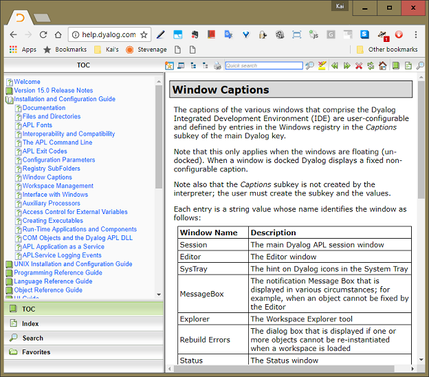
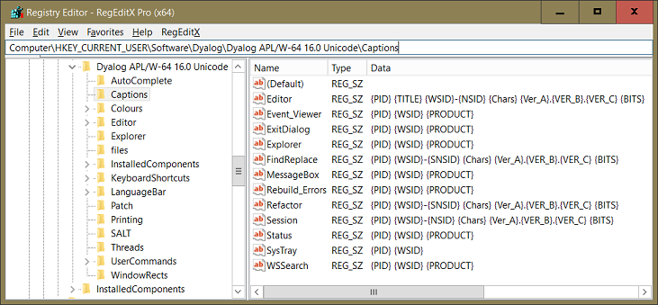
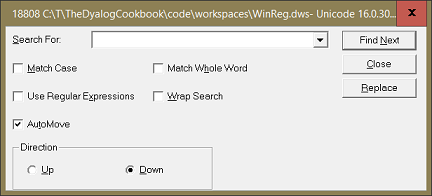

Most developers adapt the development environment in one way or another:
- Make your favourite utilities available from within
⎕SE. - Add a menu to the session with often used commands.
- Define some function keys carrying out often used commands (not applicable with Ride).
- …
There are several ways to achieve this:
- Save a copy of the default session file somewhere outside the installation directory.
By default this is
def_{countryCode}.dsein the installation directory, for exampledef_uk.dsefor the UK.Edit the configuration so that this copy is loaded.
- Save a copy of the build workspace (that is typically something like
C:\Program Files\Dyalog\...\ws\buildse.dws) outside the installation directory. Then use it to create your own tailored version of a DSE.Then follow the advice in 1)

Leave the Dyalog installation directory alone
Do not alter any files in the Dyalog installation directory, and don't add your own files there either: Dyalog may update files in there in any patch.
Although this is not strictly true in 16.0 and earlier, Dyalog may start to issue .msp files which might change any file in the installation directory without warning!
Both approaches have their own problems, the most obvious being that with a new version of Dyalog you start from scratch. However, there is a better way: save a function Setup in either C:\Users\{UserName}\Documents\MyUCMDs\setup.dyalog or one of the SALT work directories and it will be executed when…
- a new instance of Dyalog is fired up as part of the SALT boot process.
Note that the SALT boot process will be carried out even when the Enable SALT callbacks checkbox on the SALT tab of the Configuration dialog box is not ticked.
- the user command
]usetupis issued.This means that you can execute the function at will at any time in order to re-initialise your environment.
The function may be saved in that file either on its own or as part of a namespace.

You might expect that saving a class script Setup.dyalog with a public shared function Setup would work as well but that's not the case.
SALT work directories
You can check which folders are currently considered SALT work directories by issuing ]settings workdir.
You can add a folder C:\Foo with ]settings workdir ,C:\Foo.
When called as part of the SALT boot process a right argument 'init' will be passed. When called via ]usetup then whatever is specified as argument to the user command will become the right argument of the Setup function.
The Dyalog manuals mention this feature only when discussing the user command ]usetup but not anywhere near how you can configure your environment; that's why we mention it here.
If you want to debug any Setup function then the best way to do this is to make ⎕TRAP a local variable of Setup and then add these lines at the top of the function:
[1] ⎕TRAP←0 'S'
[2] .This will cause an error that stops execution because error trapping is switched off. This way you get around the trap that the SALT boot process uses to avoid Setup causing a hiccup. However, if you change the function from the Tracer don't expect those changes to be saved automatically: you have to take care of that yourself.
The following code is an example for how you can put this mechanism to good use:
:Namespace Setup
⍝ Up to - and including - version 15.0 this script needs to go into:
⍝ "C:\Users\[username]\Documents\MyUCMDs"
⍝ Under 16.0 that still works but the SALT workdir folders are scanned as well.
⎕IO←1 ⋄ ⎕ML←1
∇ {r}←Setup arg;myStuff
r←⍬
'MyStuff'⎕SE.⎕CY 'C:\MyStuff'
⎕SE.MyStuff.DefineMyFunctionKeys ⍬
EstablishOnDropHandler ⍬
∇
∇ {r}←EstablishOnDropHandler dummy;events
r←⍬
events←''
events,←⊂'Event' 'DropObjects' '⎕se.MyStuff.OnDrop'
events,←⊂'Event' 'DropFiles' '⎕se.MyStuff.OnDrop'
events,←⊂'AcceptFiles' 1
events∘{⍵ ⎕WS ¨⊂⍺}'⎕se.cbbot.bandsb2.sb' '⎕se.cbbot.bandsb1.sb'
∇
:EndNamespaceSuppose in the workspace MyStuff there is a namespace MyStuff that contains at least two functions:
DefineMyFunctionKeys; this defines the function keys.OnDrop; a handler that handles “DropObject” and “DropFiles” events on the session's status bar.
This is how the OnDrop function might look:
OnDrop msg;⎕IO;⎕ML;files;file;extension;i;target
⍝ Handles files dropped onto the status bar.
⎕IO←1 ⋄ ⎕ML←1
files←3⊃msg
:For file :In files
extension←1(819⌶)3⊃1 ⎕NPARTS file
:Select extension
:Case '.DWS'
⎕←' )XLOAD ',{b←' '∊⍵ ⋄ (b/'"'),⍵,(b/'"')}file
:Case '.DYALOG'
:If 9=⎕NC'⎕SE.SALT'
target←((,'#')≢,1⊃⎕NSI)/' -Target=',(1⊃⎕NSI),''''
⎕←' ⎕SE.SALT.Load ''',file,'',target
:EndIf
:Else
:If 'APLCORE'{⍺≡1(819⌶)(⍴⍺)↑⍵}2⊃⎕NPARTS file
⎕←' )COPY ',{b←' '∊⍵ ⋄ (b/'"'),⍵,(b/'"')}file,'.'
:Else
:If ⎕NEXISTS file
⎕←{b←' '∊⍵ ⋄ (b/'"'),⍵,(b/'"')}file
:Else
⎕←file
:EndIf
:EndIf
:EndSelect
:EndForWhat this handler does depends on what extension the file has:
- For
.dyalogit writes a SALT load statement to the session.If the current namespace is not
#but, say,Foothen-target=Foois added. - For
.dwsit writes an )XLOAD statement to the session. - If the filename contains the string
aplcorethen it writes a )COPY statement for that aplcore with a trailing dot to the session. - For any other files the fully qualified filename is written to the session.
When you start Dyalog with admin rights then it's not possible to drop files onto the status bar. That's because Microsoft considers drag'n drop too dangerous for admins. (One might think it better strategy to leave the dangerous stuff to the admins.)
How you configure your development environment is of course very much a matter of personal preferences.
However, you might consider loading a couple of scripts into ⎕SE from within Setup.dyalog; the obvious candidates for this are APLTreeUtils, FilesAndDirs, OS, WinSys, WinRegSimple and Events. That would allow you to write user commands that can reference them with, say, ⎕SE.APLTreeUtils.Split.
Defining function keys is of course not exactly a challenge. Implementing it in a way that is actually easy to read and maintain is a challenge.
:Namespace FunctionKeyDefinition
∇ {r}←DefineFunctionKeys dummy;⎕IO;⎕ML
⎕IO←1 ⋄ ⎕ML←3
r←⍬
⎕SHADOW⊃list←'LL' 'DB' 'DI' 'ER' 'LC' 'DC' 'UC' 'RD' 'RL' 'RC' 'Rl' 'Ll' 'CP' 'PT' 'BH'
⍎¨{⍵,'←⊂''',⍵,''''}¨list
r⍪←'F01'('')('(Reserved for help)')
r⍪←'F02'(')WSID',ER)(')wsid')
r⍪←'F03'('')('Show next hit') ⍝ Reserved for NX
r⍪←'F04'('⎕SE.Display ')('Call "Display"')
r⍪←'F05'(LL,'→⎕LC+1 ⍝ ',ER)('→⎕LC+1')
r⍪←'F06'(LL,'→⎕LC ⍝',ER)'→⎕LC'
...
:EndNamespaceThis approach first defines all special shortcuts – like ER for Enter – as local variables; using ⎕SHADOW avoids the need for maintaining a long list of local variables. The statement ⍎¨{⍵,'←⊂''',⍵,''''}¨list assigns every name as an enclosed text string to itself like ER←⊂'ER'. Now we can use ER rather than (⊂'ER) which improves readability.
A definition like LL,'→⎕LC ⍝',ER reads as follows:
LLpositions the cursor to the very left of the current line.→⎕LC ⍝is then written to the session, meaning that everything that was already on that line is now on the right of the⍝and therefore has no effect.ERthen executes Enter, meaning that the statement is actually executed.
If you don't know what LL and ER actually are read the page “Keyboard shortcuts” in the UI Guide.
If you always run just one instance of the interpreter you can safely ignore this.
If on the other hand you run occasionally (let alone often) more than one instance of Dyalog in parallel then you are familiar with how it feels when all of a sudden an unexpected dialog box pops up, be it an aplcore or a message box asking “Are you sure?” when you have no idea what you are expected to be sure about, or which instance has just crashed.
There is a way to get around this. With version 14.0 Windows captions became configurable. This is a screenshot from the online help:

Help — online versus offline
There are pros and cons:
- Pressing F1 on something you need help with opens the offline help at the time of writing (2017-07).
- The online help is frequently updated by Dyalog.
We suggest you configure Windows captions in a particular way in order to overcome this problem. The following screen shot shows the definitions for all Windows captions in the Windows Registry for version 16 in case you follow our suggestions:

Notes:
- All definitions start with
{PID}, which stands for process ID. That allows you to identify which process a particular window belongs to, and even to kill that process if needs must. - All definitions contain
{WSID}which stands for the workspace ID. {PRODUCT}tells all about the version of Dyalog: version number, 32/64 and Classic/Unicode.You might not be interested in this if you use just one version of Dyalog.
The other pieces of information are less important. For details refer to the page “Window captions” in the Installation and Configuration Guide. These definitions ensure most dialog boxes (there are a few exceptions) can easily be associated with a particular Dyalog session. This is just an example:

You can ask for the current settings with the user command ]caption:
]captionYou can also change the settings with this user command. For details enter:
]??Caption